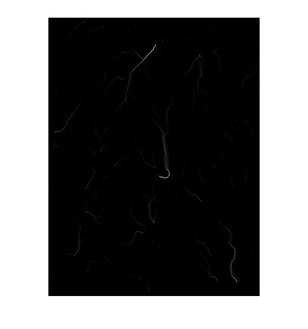
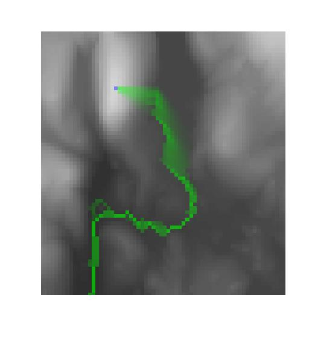

Upslope Area Toolbox User Guide
Contents
What is "Upslope Area"?
Imagine you are standing on the side of hill somewhere in the rain. Some of the water that falls uphill from your position will flow directly toward and then past your shoes. Some of the water, though, will flow downhill in a different direction, away from you. The area of land above you that drains directly through where you are standing is called the upslope area of your position.
If you were standing at the very top of the hill, the upslope area there would be 0; no water flows to you from anywhere else. On the other hand, if you stood at the deepest point in a crater with high rims all the way around, the upslope area would be the entire area of the crater.
Upslope area is an important hydrology measurement used to study water drainage networks, the motion of sediments and contaminants, erosion, landslides.
About Digital Elevation Models
A digital elevation model (or DEM) is a computer representation of surface topography. A raster DEM is a rectilinear grid of values, each of which represents the height of a surface at the corresponding grid location.
High-quality, high-resolution DEMs are now widely available and being used for a wide variety of terrain analysis. DEM data for the United States can be obtained through the U.S. Geological Survey (USGS) and its data providers.
The file milford_ma_dem.mat contains an example DEM covering a portion of Massachusetts in the United States. You can load this MAT-file and display the elevation matrix Z as follows:
load milford_ma_dem imshow(Z, []) % imshow is in the Image Processing Toolbox
Use surf and other MATLAB graphics functions to display a small portion of the DEM as a surface.
Zsub = Z(220:250, 170:215); surf(Zsub) shading interp colormap(gray) set(gca, 'YDir', 'reverse') view(-15, 40) axis off
You can see a bright hill on the left side and what looks like it might be a pond (the flat, dark region) in the middle. But the height effect is greatly exaggerated here. If you look at the description variable in the MAT-file you can see that the x- and y-resolution of the pixels in the DEM data is 30 meters. You can get a better idea of the true appearance of the surface by setting the DataAspectRatio accordingly.
set(gca, 'DataAspectRatio', [1 1 30])
view(-10, 10)
Modeling Surface Flows
When analyzing water flow using a DEM, an essential step in the analysis is to determine the direction of flow at each point in the DEM grid. Consider, for example, the 3-by-3 matrix of height values below:
E = [10 10.5 11; 10 9 8.9; 10.3 8.5 8.4]
E = 10.0000 10.5000 11.0000 10.0000 9.0000 8.9000 10.3000 8.5000 8.4000
The center point has a height of 9. It's eastern neighbor has the same height. It has two downhill neighbors to the south and the southeast. How should determine a direction of water flow for this point?
The Upslope Area Toolbox provides functions that compute water flow direction using the D-infinity method described in Tarboton, "A new method for the determination of flow directions and upslope areas in grid digital elevation models," Water Resources Research, vol. 33, no. 2, pages 309-319, February 1997.
The function pixelFlow returns the flow direction for a given point in a DEM. The direction is returned as the angle (in radians) measured counter-clockwise from the east-pointing horizontal axis.
center_point_flow_in_degrees = pixelFlow(E, 2, 2) * (180/pi)
center_point_flow_in_degrees = 281.3099
So the flow from the center point is about 281 degrees, or south-southeast. You can use demFlow to compute the flow direction for all the points in a DEM.
R = demFlow(E)
R =
5.4978 4.7790 4.7124
5.8195 4.9098 4.7124
0 0 NaN
The NaN value in the lower right corner indicates that location has no downhill neighbors, so there is no downhill water flow from there.
Computing and Understanding the Flow Matrix
Another important step in hydrological analysis is to answer this question for each point in the DEM: how much water flows into that point from each of its neighbor points? The flow matrix, computed by the function flowMatrix, answers this question for all the points in a DEM.
T = flowMatrix(E, R)
T = (1,1) 1.0000 (5,1) -1.0000 (2,2) 1.0000 (5,2) -0.4097 (6,2) -0.5903 (3,3) 1.0000 (6,3) -1.0000 (4,4) 1.0000 (5,4) -0.9152 (8,4) -0.0848 (5,5) 1.0000 (6,5) -0.7487 (9,5) -0.2513 (6,6) 1.0000 (9,6) -1.0000 (7,7) 1.0000 (8,7) -1.0000 (8,8) 1.0000 (9,8) -1.0000 (9,9) 1.0000
Although the flow matrix is sparse, in this small example it is easier to look at the flow matrix values if you convert it to full.
T = full(T)
T =
1.0000 0 0 0 0 0 0 0 0
0 1.0000 0 0 0 0 0 0 0
0 0 1.0000 0 0 0 0 0 0
0 0 0 1.0000 0 0 0 0 0
-1.0000 -0.4097 0 -0.9152 1.0000 0 0 0 0
0 -0.5903 -1.0000 0 -0.7487 1.0000 0 0 0
0 0 0 0 0 0 1.0000 0 0
0 0 0 -0.0848 0 0 -1.0000 1.0000 0
0 0 0 0 -0.2513 -1.0000 0 -1.0000 1.0000
Each of the nine rows and columns of T corresponds to one of the nine points in the 3-by-3 DEM, with the points in the DEM numbered columnwise. For example, the fourth row and the fourth column correspond to the DEM point E(1,2). Similarly, the ninth row and the ninth column correspond to the DEM point E(3,3).
The 1's along the diagonal of T represent the idea that an equal unit volume of water is being added to the surface, presumably from rain, at each point in the DEM.
Look at the columns of T to see where the rain water drains to. Here is the second column of T.
T(:, 2)
ans =
0
1.0000
0
0
-0.4097
-0.5903
0
0
0
The values in this column indicate that about 41% of the water flowing into DEM point #2 flows down into DEM point #5, because T(5,2) equals -0.4907. About 59% of the water flowing into DEM point #2 flows down into DEM point #6, because T(6,2) equals -0.5903.
Look at the rows of T to see where a given DEM point receives its water from. For example, here is the ninth row of T:
T(9, :)
ans =
0 0 0 0 -0.2513 -1.0000 0 -1.0000 1.0000
These values indicate that DEM point #9 receives all of the water flowing into DEM point #8 (T(9,8) equals -1.0), all of the water flowing into DEM point #6 (T(9,6) equals -1.0), and about 25% of the water flowing into DEM point #5 (T(9,5) equals -0.2513).
Computing Upslope Area
The function upslopeArea computes the upslope area for every point in the DEM by solving a sparse linear system of equations based on the flow matrix. For example:
U = upslopeArea(E, T)
U =
1.0000 1.0000 1.0000
1.0000 3.3249 2.0848
1.0000 5.0796 9.0000
Note that the upslope area of a point includes itself in this computation. An upslope area of 1.0 indicates that the only water flowing into that location is the unit amount assumed from rainfall. In our small 3-by-3 DEM example, the water falling at all points eventually flows downhill into the (3,3) location so that the upslope area at that point is 9.
Now let's solve a real problem. Specifically, let's compute the upslope area for the data in milford_ma_dem.
load milford_ma_dem
R = demFlow(Z);
T = flowMatrix(Z, R);
U = upslopeArea(Z, T);
imshow(U, [])
 It's hard to see much detail. Another visualization technique you can try is to display the logarithm of the upslope area. This technique shows much more detail.
imshow(log(U), [])
You can also use the visMap function to superimpose the upslope area (shaded in green) over the original DEM data.
visMap(U, Z)
Here's a zoomed-in view
axis([165 230 160 290])
Influence Maps
The flow matrix can be used to construct other linear systems whose solutions give useful information. For example, you can ask this question: For a given DEM point P, what is the complete set of downhill DEM points that receive water from P? The influence map, a matrix computed by influenceMap, answers this question.
In this example you will compute the influence map for the milford_ma DEM point (235, 185) and then display it using visMap.
I = influenceMap(Z, T, 235, 185);
visMap(I, Z, 235, 185)
% Zoom in
axis([165 230 220 290])
You can see that water starting at the top of the hill (blue dot) flows to the east into the pond and then out through the southern end of the pond into a local minima (sink). (See the "Sinks" section in "Special Data Considerations" below.)
Dependence Maps
The dependence map, a matrix computed by dependenceMap, is another quantity computed from the flow matrix. It shows the complete set of uphill DEM points that drain through a given DEM location. Just like the influence map, the dependence map can be visualized using visMap. The following example shows how to compute and visualize the dependence map for the DEM location (270, 189).
D = dependenceMap(Z, T, 270, 189);
visMap(D, Z, 270, 189)
% Zoom in
axis([65 325 70 350])
There's a blue dot indicating the point that the green area is draining through, but at this scale it's too small to see, so zoom in further:
axis([155 225 235 305])
Special Data Considerations
Sinks
For the influence map example above, recall that the water flowed down from the top of the hill, into the pond, and out the southern end of the pond, where it appeared to simply stop. That's because the DEM data had a local minimum there. Here are the DEM data values immediately surrounding that point.
Z(268:272, 187:191)
ans =
99 98 99 103 104
98 99 99 102 102
100 99 98 99 100
103 102 100 99 99
107 106 103 101 99
You can see that the height at the middle point is 98, which is lower than all the DEM points surrounding it. This kind of local minimum is called a sink. For many kinds of topological analyses it is desirable to eliminate all sinks that are not located at the edge of the DEM. You can use the function fillSinks to eliminate these interior sinks.
Let's repeat the influence map example on the original milford_ma DEM data, including this time a preprocessing step to eliminate interior sinks.
Zp = fillSinks(Z);
Rp = demFlow(Zp);
Tp = flowMatrix(Zp, Rp);
Ip = influenceMap(Zp, Tp, 235, 185);
visMap(Ip, Zp, 235, 185)
% Zoom in
axis([165 230 220 290])
 Now you can see that the water continues to flow. If you zoom out further you can see that the water continues to flow until it reaches a low, equal-height group of DEM points that is connected to the edge of the data set.
axis([100 320 200 473])
Plateaus
A plateau is a connected group of DEM points with equal height. For example, the DEM points in the pond shown here all have value 106.
imshow(Z, []) axis([170 215 220 250])
It isn't always clear how to compute water flow across a plateau. The function demFlow uses the arrowing technique described in F. Meyer, "Skeletons and Perceptual Graphs," Signal Processing 16 (1989) 335-363. (See Appendix A.2, Arrowing, on pages 360-361.) The technique works reasonably well in many cases, but you can see some plateau artifacts in the upslope area visualization for the milford_ma DEM.
imshow(log(U), [])
% Zoom in
axis([110 210 20 150])
The upslope area toolbox provides the function postprocessPlateaus, which replaces the upslope area values for a set of plateau points with the mean upslope area for the entire plateau. Here's how it would work for the milford_ma data.
Um = postprocessPlateaus(U, Z);
imshow(log(Um), [])
% Zoom in
axis([110 210 20 150])
Missing Data Many DEM data sets have legitimate values only within a certain watershed, which is usually an irregular region. DEM arrays typically have a "fill value" outside the watershed region to indicate invalid data. Usually the fill value is something recognizable like -999, and usually the fill value is given in the description of the data set.
To process such data sets using the Upslope Area Toolbox, replace the fill values with NaN using code like this:
Z(Z == fill_value) = NaN;
The toolbox function borderNans identifies NaN-valued DEM points that are connected to the "outside" edges of the DEM data set. The milford_ma DEM data contains border NaNs, which you can display as follows:
imshow(borderNans(Z)) % Turn the axis box on so you can see the extent of the white pixels, which are % the border NaNs. axis on
Obtaining DEM Data
DEM data for the United States can be obtained from the U.S. Geological Survey (USGS). For example, DEM data and other datasets can be obtained from the National Map Seamless Server. You can download this data in BIL format, which can be read using the MATLAB function multibandread. There are several web sites that offer information and tutorials on getting data from the Seamless Server, including this one at Yale University.
For locating DEM data covering other regions, you might try the listing of "Free Digital Elevation Model (DEM) and Free Satellite Imagery Download Links" at terrainmap.com.
If you have a recent version (R2009b or later) of Mapping Toolbox, you can use the Web Map Service (WMS) features to obtain DEM data. The wmsread reference page has an example showing how to obtain DEM data directly from the JPL WMS server.
For sources of other geospatial data that can be read using functions in Mapping Toolbox, see MathWorks Technical Note 2101 - Accessing Geospatial Data on the Internet for the Mapping Toolbox.